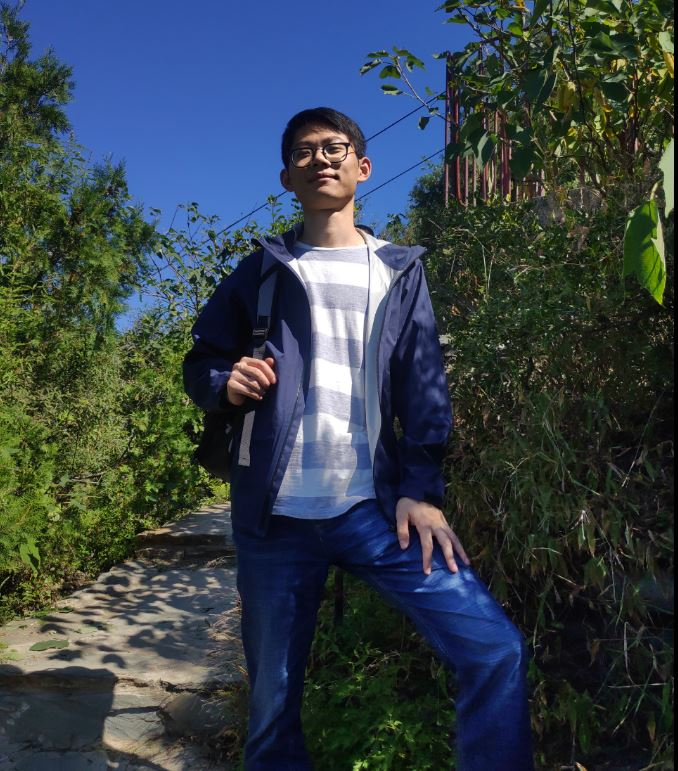
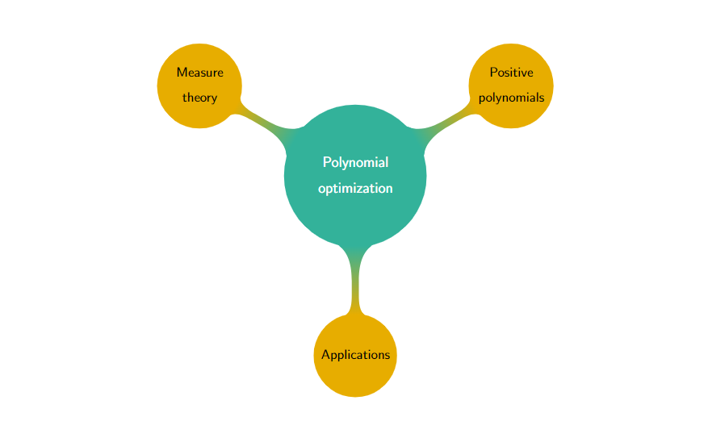
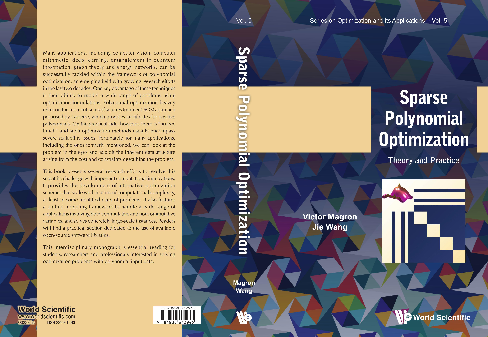

王杰（Jie Wang）

中国科学院数学与系统科学研究院 思源楼518
Links
Google Scholar
GitHub
Contact: wangjie212@amss.ac.cn

I am an associate professor at AMSS-CAS in Beijing, China since July 2021. I was previously a postdoctoral reseacher working with Prof. Victor Magron and Prof. Jean-Bernard Lasserre at LAAS-CNRS in Toulouse, France from July 2019 to June 2021. Formerly, I was a postdoc working with Prof. Bican Xia at Peking University. I received my doctor's degree of mathematics under the supervision of Prof. Xiaoshan Gao at AMSS-CAS in July 2017.
My research interests include polynomial optimization, semidefinite programming, quantum information, quantum many-body, real applied algebra.

Our book (with Victor Magron) entitled "Sparse Polynomial Optimization: Theory and Practice" has been published in the Series on Optimization and Its Applications, World Scientific Press.

招硕博生/博士后，详情请见招生指南、招博士后以及中国科学院大学招生。
For available postdoctoral/tenure-track/tenured positions at AMSS-CAS, please check out positions, and feel free to send me an email to discuss potential collaborations.
News & Activity
- 2026.6.2-5, SIOPT 2026 in Edinburgh, United Kingdom.
- 2026.5.25-29, Tensor Isomorphism: Algorithms, Geometry and Applications in Tokyo, Japan.
- 2026.3.23-25, Workshop on Real Applied Algebra in Copenhagen, Denmark.
- 2026.3.2-5, Current and Future Computational Approaches to Quantum Many-Body Systems 2026 in Naha, Okinawa, Japan.
- 2025.12.20-21, 深港多项式优化研讨会 in Shenzhen.
- 2025.7.21-24, ICCOPT in Los Angeles, United States.
- 2025.5.16-19, 全国数学优化大会 in Shanghai.
- 2025.1.13-17, "100 Years of Matrix Mechanics" International Symposium in Sanya.
- 2024.7.28-8.2, Oberwolfach Workshop - Polynomial Optimization for Nonlinear Dynamics: Theory, Algorithms, and Applications in Germany.
- 2023.10.15-18, 2023 INFORMS Annual Meeting in Phoenix, United States.